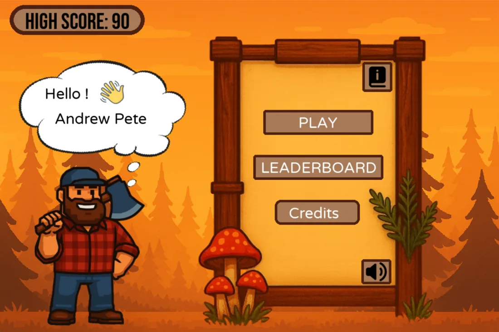

Online leaderboard
Every score goes on the board, so you can fight for the top spot.

Hey, let's make a game! This one has a leaderboard, so you can beat your friends.
Chop the tree, dodge the branches, and beat your friends on the online leaderboard.

Every score goes on the board, so you can fight for the top spot.
A short in-game guide teaches the basics.
In the browser on desktop and phone, or on Windows, macOS and Linux.
Timberly uses art and sounds by many generous people. See the credits ↗